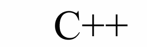

New! Version 1.3 available for
download
as of July 26, 2001.

click here for more FC++
logos
FC++: Functional Programming in C++
Higher-Order Polymorphic Functions in the C++ Language
FC++ is a library for functional programming in C++. Functional programming
is a programming paradigm in which functions are treated as regular values.
Thus, we can have functions that take other functions as parameters. The
former functions are called "higher-order" functions. A common feature
of functions is that they can be polymorphic. "Polymorphic" means
that the same function can be used with arguments of many types. FC++ is
distinguished from other libraries (including the C++ Standard Library)
by its complete support for polymorphism: FC++ polymorphic higher-order
functions can take other polymorphic functions as arguments and return
polymorphic functions as results. This is particularly useful (i.e., simplifies
code) in C++ where type inference is limited and we often need to pass
polymorphic functions around and determine their type later.
With FC++ you can define your own higher-order polymorphic functions,
but the library also contains a large amount of functionality that can
be re-used as-is in C++ programs. This includes infinite ("lazy") lists,
useful higher-order functions (like map,
compose, etc.), a reference-counting
facility that can be used to replace C++ pointers, many common logical
and arithmetic operators in a form that can be used with higher-order functions,
and more.
Documentation
Distribution
-
FC++ download
page. You can view and download individual files or the whole library,
as well as several example files.
Customers
Related Links
-
Other libraries that support functional programming in C++ include
-
Many of the functions in FC++ are designed to be similar to those in the
standard library of the
Haskell programming
language.
People
FC++ is being developed by Brian
McNamara and Yannis Smaragdakis.
Feel free to write to us if you have questions or comments about the library;
we appreciate feedback from our users.
Site map
Last updated on July 26, 2001 by Brian McNamara